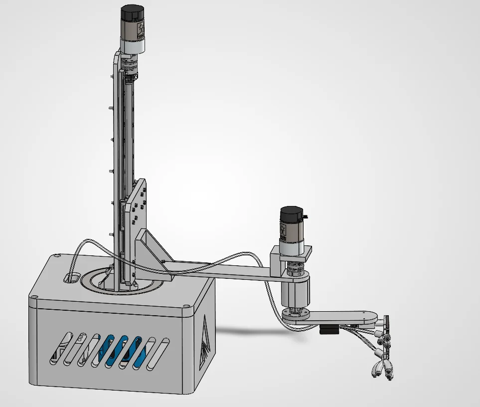
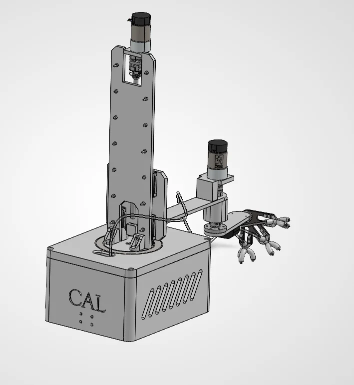
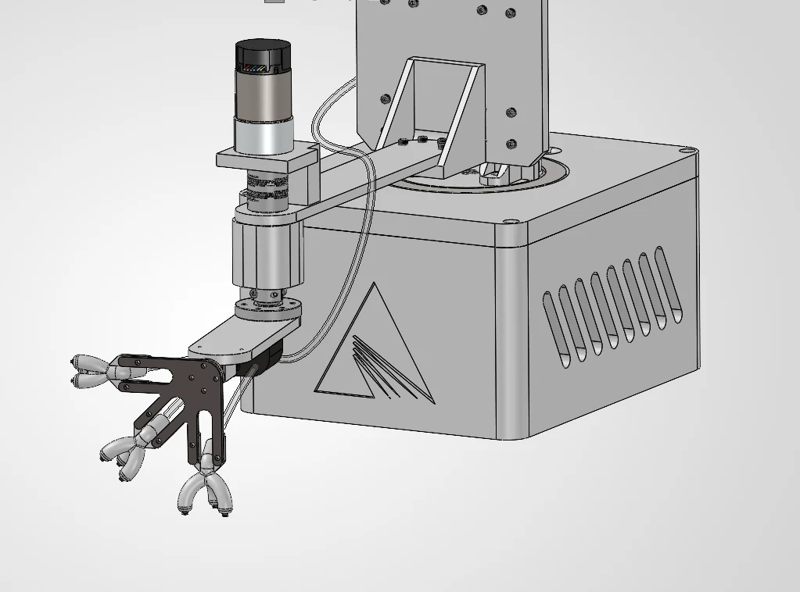
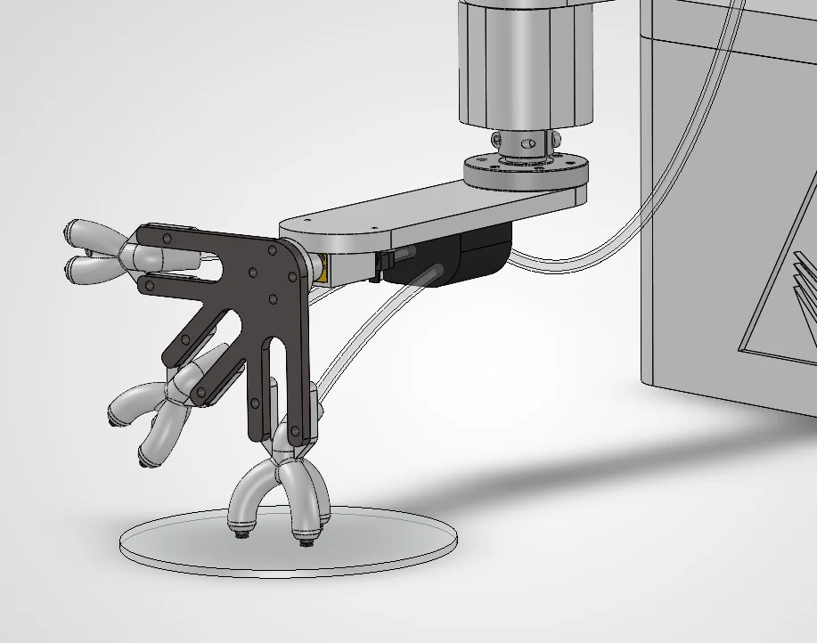
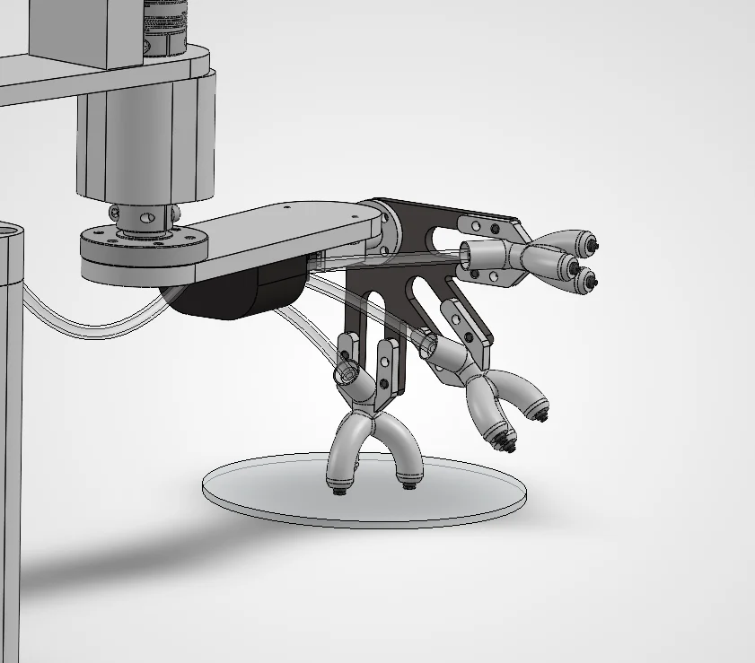
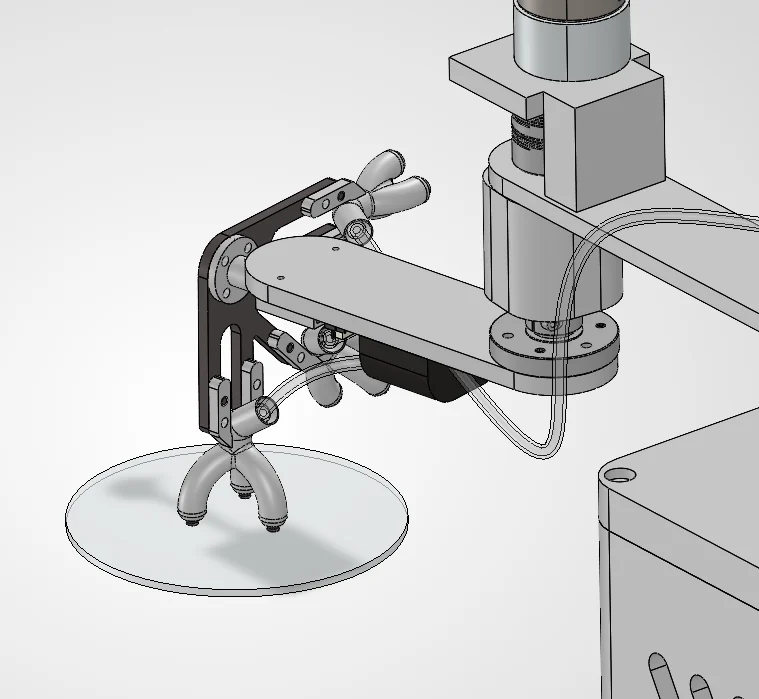
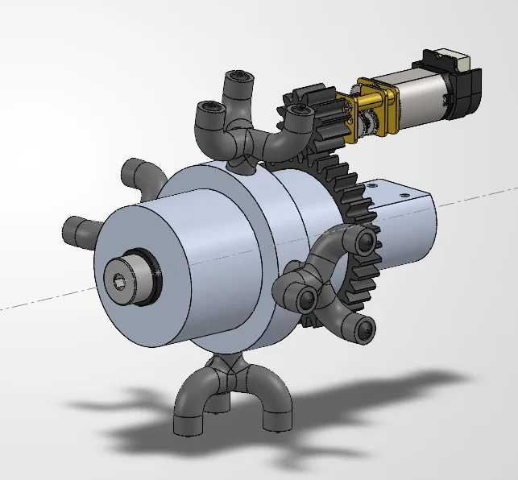
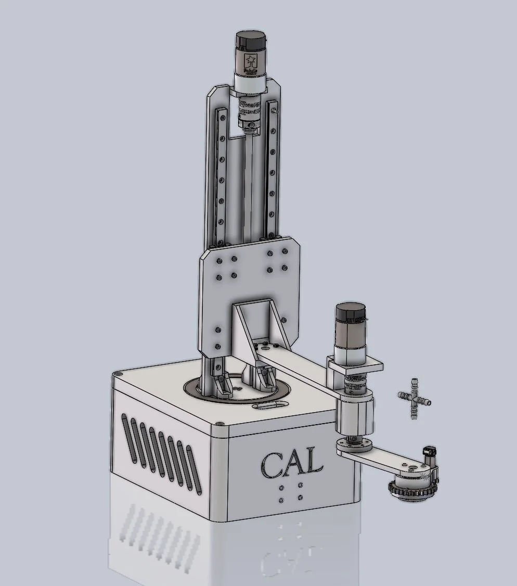
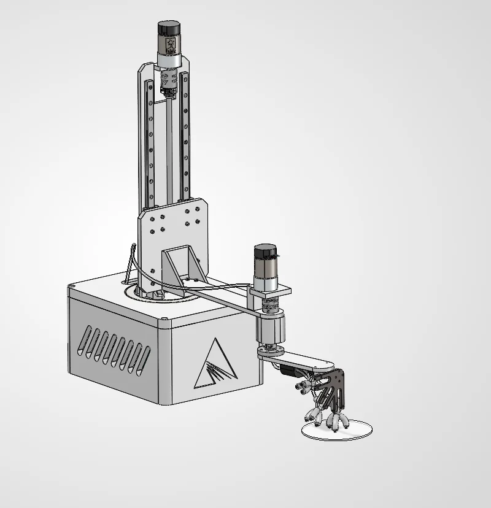

In progress. This page shows our near-final CAD (November 2026). I’ll update it as we build and test the robot.
The challenge
Assembling semiconductor equipment involves handling quartz components with a very high surface finish. Lam Research asked our team to pick and place these parts with small vacuum cups, and to have the robot choose the right cup for each part on its own.
- Objective
- Pick and place quartz components of varying sizes with surface roughness of Ra 4 and 8 µin, using a robotic rig fitted with small vacuum cups.
- Requirements
- Predict the lifting capability (weight) of each nozzle size
- Determine the highest allowable load per mm² of nozzle opening with a factor of safety of 2, for 3 different cup sizes
- Automatically select the cup size from the component’s weight: smaller parts get a smaller cup, bigger parts a bigger one
- Constraints
- $500 team budget
- Final oral presentation to Lam Research representatives
System design
The team split the robot into three main assemblies: the base, the vertical axis and arm, and the vacuum cup selector at the end of the arm.
Base
A NEMA 17 stepper motor with a custom cycloidal drive rotates the robot about its vertical axis, and a diaphragm pump pulls −80 kPa for the vacuum system. A 6819ZZ deep-groove ball bearing press-fits into the base cap, with a flanged lip below so it can’t fall through.




Vertical axis and arm
A motor-driven lead screw raises and lowers the arm assembly, guided by two linear rails and four carriages to resist tilting. Motor-driven arm links position the cup selector horizontally to reach each part. Bearing-to-shaft connections use transition or light interference fits to limit slipping, while couplings and hub collars use clearance fits secured by clamps.


Vacuum cup selector
My part of the robot is the cup selector, which gives the robot the right cup size for each part. The current design replaced my earlier rotary valve and is now integrated into the near-final CAD.
Current design: rotating cup bracket
A DC gearmotor turns a three-armed bracket that carries three cup clusters, one each for 2 mm, 3 mm, and 4 mm cups, with three cups per cluster. Each cluster has its own vacuum line.
Vacuum switching is separate from positioning. A manifold splits the single pump into three lines, and three 3-way solenoid valves choose which line gets vacuum. The motor then rotates the chosen cup cluster down into the working position.






First design: gear-driven rotary valve
My first design was a gear-driven rotary vacuum valve that routed −80 kPa from the pump to one cup size at a time. A small DC gearmotor turned the valve through a 12-tooth pinion and a 36-tooth gear (module 1, a 3:1 reduction). I took it through six versions in SolidWorks, then replaced it because it was overcomplicated and left extra room for air leakage. In the current design, solenoid valves handle the vacuum switching and the motor only positions the cups, which keeps the design simpler.


Design progress
Between the preliminary design review in October and the near-final CAD in November, the cup selector changed from the rotary valve to the rotating cup bracket, and the vacuum lines were routed from the base out to the end of the arm.




What’s next
The remaining goals from the project brief:
- Predict the lifting capability of each nozzle size, and the highest allowable load per mm² of nozzle opening at a factor of safety of 2.
- Build the robot and demonstrate automatic cup selection based on each component’s weight.
- Present the final design to Lam Research representatives at the end of the semester.